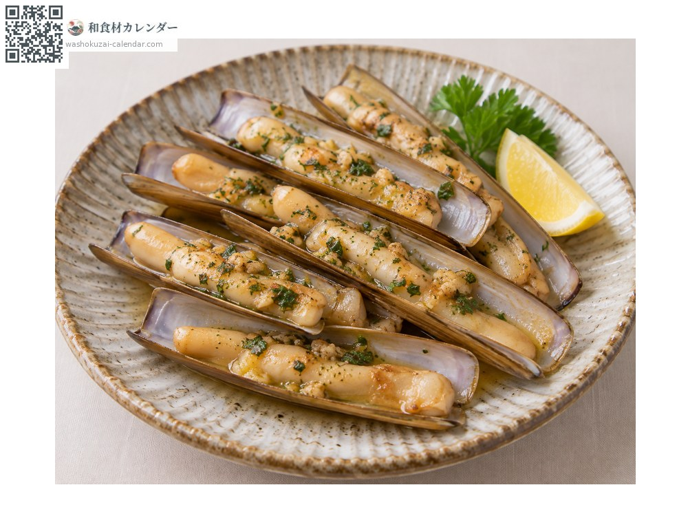
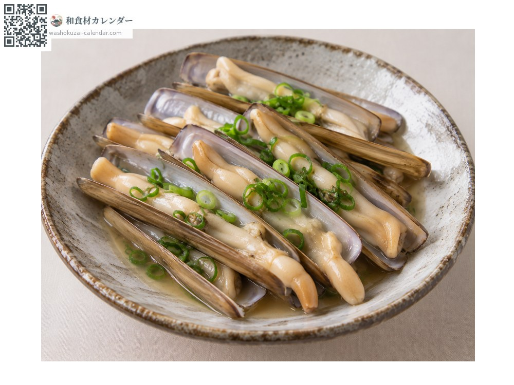
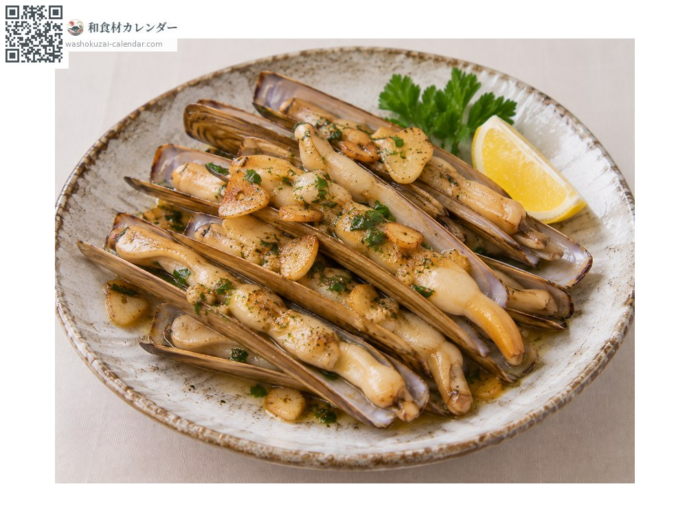

海鮮
竹蟶（馬刀貝）
マテ貝 まてがい
當令時期為4月、5月、6月

當令時期
1月
2月
3月
4月
5月
6月
7月
8月
9月
10月
11月
12月
當令有供應
料理方式

奶油燒
連殼快速煎，趁肉還沒縮之前起鍋。

清酒蒸
用清酒蒸，貝會釋出好湯汁。

熱炒
與蒜一起炒，中式或西式都很合。
挑選方式
殼沒有破損、肉質緊實。碰觸時會有反應。
保存方式
吐沙後冷藏。一到兩天內用完。
主要產地
小知識
有細長的筒狀外殼。往潮間帶的洞裡倒鹽，牠就會跳出來，因此是挖貝愛好者的目標。加熱過久會變硬，要迅速烹調。